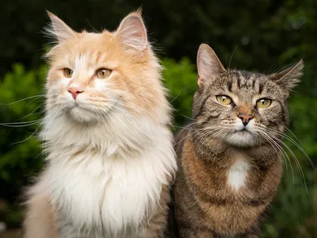

Genera una población basada en cuadrados para empezar a aproximar la imagen de referencia con bloques grandes tipo píxel.
Imagen de referencia

La población generada llena toda el área con bloques grandes tipo píxel.
Aptitud pendiente. Genera la población para comparar cada cuadrado con la imagen de referencia.